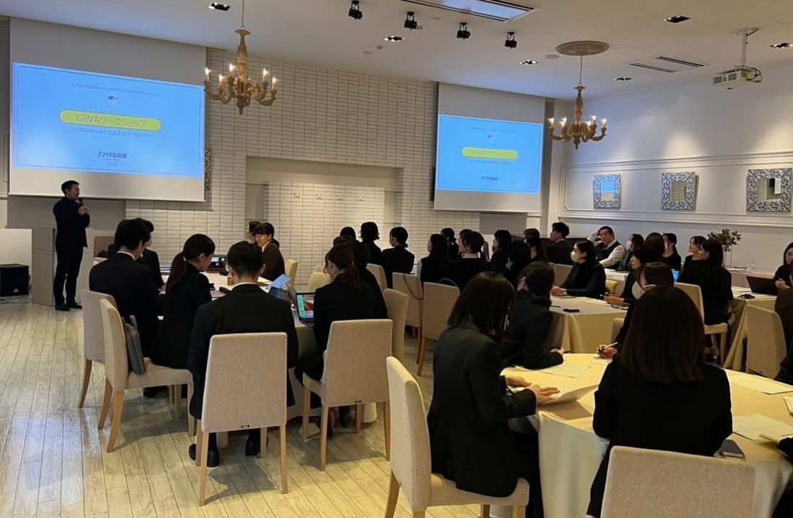
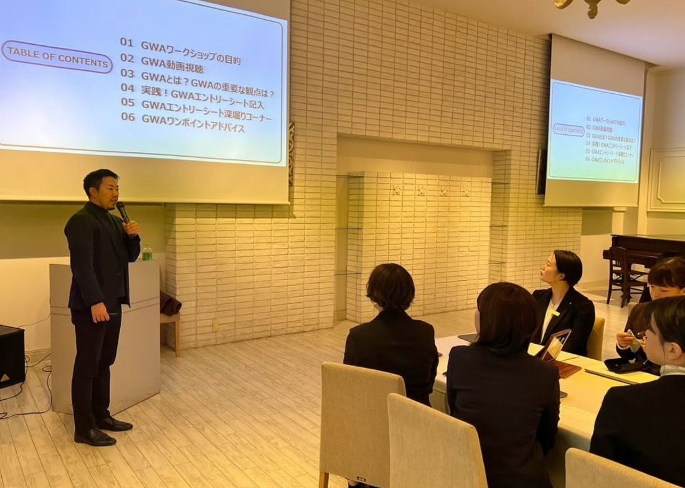
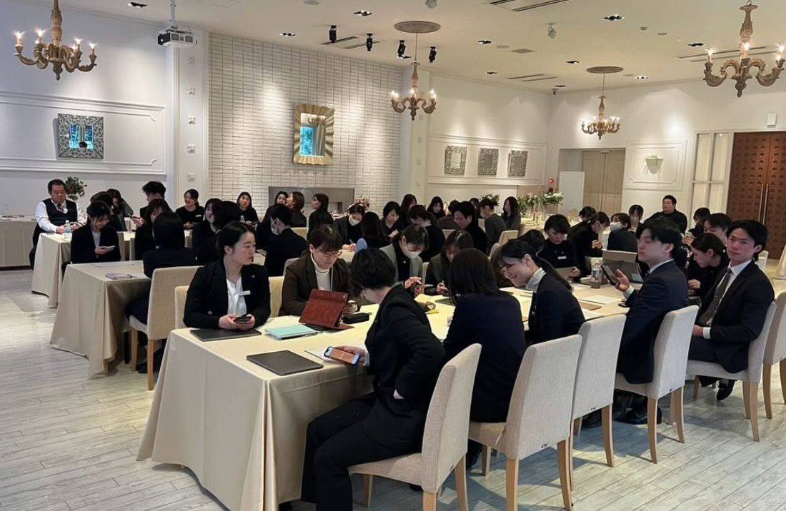

ブライダル総研の熊谷さんにお越しいただき、グッドウェディングアワードのワークショップを開催いたしました！



会員企業様の、約50名ほどのスタッフの皆さまにご参加いただきました。現場の第一線で活躍されている方々がこれだけ一堂に会し、同じテーマで学び合う。それ自体が、なかなか得がたい機会です。
ワークショップを通して、自身の創った結婚式を振り返り、整理する貴重な機会となりました。
日々、目の前の一組一組に全力で向き合っていると、一つの式が終われば、すぐ次の準備へと進んでいきます。立ち止まって「あの結婚式は何が良かったのか」「自分は何を大切にしていたのか」を振り返る時間は、意外なほど取れないものです。
今回のワークショップは、まさにその立ち止まる時間でした。自分の手がけた結婚式を言葉にし、整理していく作業を通して、ふだんは無意識にやっていたことの価値に、改めて気づかれた方も多かったのではないでしょうか。
グッドウェディングアワードを通して、結婚式のプランニングをさらに見つめ、成長につながっていければ嬉しく思います。
一人ひとりのプランナーが自らの仕事を見つめ直し、高め合っていく。その積み重ねが、この地域のウェディング全体の質を押し上げ、そして100年後へと繋がっていくのだと思います。
ご参加いただきました皆さま、そしてブライダル総研の熊谷さん、貴重な機会をありがとうございました。